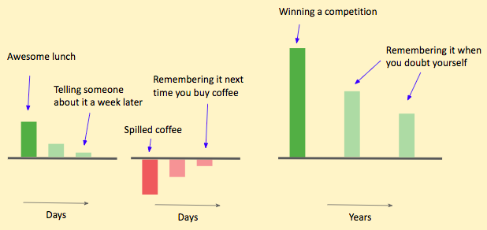
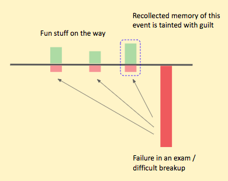

On the repainting of past that happens
Jun 2, 2022
Living life and looking back at it are two very different things. When we look forward and live, we find joy in the small stuff -- eating a nice meal, having a good conversation with a friend, going for a walk. But when we look back, none of these events strike out as particularly special. What stands out in hindsight are the significant events of life, the ones that decide the course for the near future (and in some cases entire lifetime). We like to view our life as a sequence of phases, with these big events marking the start or end of these phases. This could be the start/end of a relationship, graduating college, change of jobs, promotion, winning some competition, accident etc. If we were to observe the feeling accompanying these events, I doubt that the major events are very different from the ordinary (small) ones.
Does getting your dream job feel 10,000 times more pleasurable than, say, eating a nice meal? Or watching your favourite movie? Do you feel 10,000 times worse when you have a breakup compared to when you can’t go to a party? I doubt. What about 1000 times? What about 100 or 10 times? My guess would be that purely in terms of how feelings are measured (activations in our brain or concentration of neurotransmitters), the smaller values are more true.
In my opinion, bigger moments don’t differ much in the intensity of feeling, rather, they differ in the rate of decay of their intensity. The joy (or sadness) is slightly more intense but substantially more long-lasting.

There’s another characteristic that these big events have -- a power to repaint everything preceding it.
Through our own lives and others, we are well accustomed to how a big achievement feels worth it of all the struggle and sacrifice you have made for it. All the countless days you restrained yourself from small joys, in hindsight, appear appropriate. You can almost imagine yourself happy in those day-to-day sadness, frustrations and tiredness. Such is the power of a big positive event that it will repaint each negative experience in that phase with a brush of positive emotion.
The same is true for major negative events too -- failure, loss, break up etc. Such an event will taint all your positive memories of joy, happiness, and laughter with a stroke of negative emotions. Every time you went out to enjoy an activity preceding the failure would evoke a slight feeling of guilt, shame and self-loathing when you look back now.

Why is this an issue? Because it gives you anxiety, a fear. Negative events are bound to happen, and many times they are beyond our control. The fear is that there is something negative that is going to happen, something big, lurking around the corner and it would steal and repaint the small yet precious memories you are making every day.
I wish it worked the other way around too. I wish a bunch of small events could help alleviate the sadness and grief of a big negative event, but it certainly doesn’t feel that way.
Is this fear unfounded? For one can argue that we should live only in the present. Why does it matter how we look back at the past? Isn’t that what everyone and everything (articles/books/movies) say? To live in the present? I beg to differ, for we can try to live in the present, but it doesn’t happen all the time. Life isn’t that engaging to be only lived in the present (how much I wish it were). A significant chunk of life is lived in our head -- and the time we are not engaging in wishful thinking about the future, we are left with thinking about the past. That is what I find scary.
(A particular case of repainting of past is nostalgia, see
comic)
On the lack of surprise
Jun 2, 2022
One of the design faults of life is how easily it succumbs to monotony. We constantly want things to be something different. And this want is in contrast from our other wants about the future, say wanting to buy new clothes, wanting to go on a trip, wanting to spend more time with someone (which are all well defined or at least vaguely defined). This want is a want of something unexpected, something new that breaks the monotony. And for this precise reason, we cannot explain this want. I'll call it - A WANT FOR SURPRISE.
Having spent so many years of our life, we have to some extent, developed taste in things. We have a rough idea of our likes and dislikes. What we don’t have an idea of is #3.
- I like
- I don’t like
- I don’t know whether I’ll like it or not
We know the people who bring us joy, who bring us comfort, yet we occasionally crave new people to talk to. Haven’t you felt the rush it gives you when you get to know someone for the first time? That’s the feeling of surprise (or shock) for you. We know the kind of movies we like to watch and the kind of books we like to read, yet we find ourselves searching for new genres to explore. We know the cuisines we find tasty, the kind of activities that bring us joy. Yet we spend countless hours searching for new restaurants and fun activities that we may come to enjoy.
Let’s look at the emotion each of these brings to us
- I like => joy, happiness
- I don’t like => disgust, sadness
- I don’t know whether I’ll like it or not => surprise, shock
So are we looking for joy solely? or are we also looking for surprise? For if joy was everything we wanted, we would already have a good idea of how to get that and hence wouldn’t be relentlessly searching. Or maybe the search for surprise is a joy in itself of a different kind -- the joy of discovery.
(I suspect this is the motivation behind social media companies occasionally showing you videos or reels or books that are completely new and in no way related to your usage)
Issues with self-help content
May 31, 2022
1. Disconnect with the stories.
Most self-help focuses on wrong examples. Subjects of self-help content are people with great success, fame, money, etc. Stories fitting the templates of rags-to-riches and a lone hero battling impossible odds. Bill Gates, Steve Jobs, Benjamin Franklin, Christiano Ronaldo, Kobe Bryant, Will Smith etc, the select few people known to the whole world (which would at any point of history be a few hundred people out of 6 billion). Do you ever look at these people and wonder if they are even real? Are they even people? Are they humans just like us? We feel disconnected from people who have made a name for themselves in the world, the people we admire and aspire to be. This disconnect is a great source of frustration. At its root lies our inability to imagine a path that takes us from here (us) to there (them). It doesn’t help that the stories available in public discourse about exemplary people only provide us with the highlights. The stories start from the point success was already achieved, completely skipping what happened before. A person was born, went to so and so college, fast forward a decade or two is at the top of their field. Sometimes these stories, in the act of self-attestation, provide cherry-picked evidence of exemplar quality when they were young -- a story by a parent, teacher or coach which are at best anecdotal. We are only handed out the final few chapters of their biographies. Rather than serving as inspiration, it becomes a source of overwhelm and envy. Pitching ourselves against giants leads to self-loathing, inaction and paralysis.
Too many random reminders of other people’s success too soon may simply terrify us into inactivity and unwittingly prevent us from putting any single plan into practice. We leap from target to target without knowing how to focus. In order to achieve anything on our own, we need to be free for extended stretches from the psychological pressures exerted by news of others’ feats.
-- Alain de Botton (article)
It would be better if self-help content provided a more average picture. Instead of highlighting a single person who made it, summarise where all those who started similar ended up. Focus on the signal and not on the noise and outliers. Instead of showing a person too far away that it starts seeming unreal, show the intermediate people. There are people at every point in the path between here to there. People striving at every step, failing or succeeding, dropping out or moving ahead. Highlight the good, the bad and the ugly of in-betweens.
2. Temporary boosts.
A lot of self-help content is packaged as quick-fix solutions, which provides a temporary boost of motivation that might propel you to get out of your bed and clean the room once but soon the high fades and one finds themselves at square one. With time this becomes an addiction of its own. You start craving a higher and higher amount of these boosts to be able to do anything.
3. Preachy tone.
Do X, Don’t do Y, Just do this, X steps to become Y. Niche self-help books and authors often assume that they have found the elixir to all problems of readers, and now they are telling it to so YOU SHOULD APPRECIATE AND FOLLOW IT. Actually improving yourself is hardly ever a matter of a single issue. It’s a whole process of slowly changing your negative thoughts, fears, habits and behaviour. Infact in my opinion, reading biographies could be better self-help than self-help books themselves. A biography would help you learn about someone’s life and reflect on it without that being force-fed to you. And you are more likely to follow the advice of someone you admire rather than self-help authors themselves (The value of advice is a product of two things, the effectiveness of the words or method suggested × the value of the person in your eyes)
I always like to learn, but I don’t always like to be taught
-- Winston Churchill
Why we hesitate writing down our goals or to-dos
May 26, 2022
As someone who daydreams a lot, I struggle a lot with writing down what precisely is that I would like to do. It is not a lack of wishes but rather too many of them that are at the root of this problem. It’s easy to come up with things you would like to explore / work on / improve in the future. Sit without your phone for an hour and you’ll be able to come up with many. The hard part is when someone asks you to choose 1 or few out of them. In essence goal setting is not simply “what I want to do” but also “what I don’t want to do”. By setting goals (or systems or habits or other equivalent words) you are qualifying how you envision the future for yourself. That means letting go of many of the half-baked wishes in your head. You have to go through the sadness and grief of what you won’t do and who you’ll never be. We need to accept (and process) that by taking a path we are giving up on other paths (atleast for the time being)
Related - Article by Mark Mannson and Quote by Sylvia Plath
On Insidious Addictions
May 26, 2022
Addiction is not always drinking, smoking, social media or pornography. Work could be an addiction, reading could be an addiction, you could be addicted to travelling and so on. Everything has a potential of becoming an addiction. The word potency refers to how easily you could become addicted to something. Sure potency is high for smoking or watching pornography but these activities are also ubiquitously known to be harmful or unhealthy. Everyone knows the adverse effect they have on physical or mental health. There are other things you can get addicted to which are seemingly normal or even healthy activity. Reading for example is a “good” activity. So is exercising or travelling. But when they start serving the purpose of escape, that’s when you need to be careful. You may be turning to these activity in order to numb yourself, from feeling of anxiety or overwhelm. The reason why I call these insidious because they are hard to identify and thus get in control. There is no evident “unhealthiness” attached to these activities, which was the case for smoking for example. You don’t feel guilty or bad doing it, on the contrary it gives you positive feeling of accomplishment, progress or excitement. No body in your vicinity points it out to you. But nonetheless these serve the exact same purpose of escape, running away and avoidance. You may be procrastinating doing a more important task by exercising or reading.
We need awareness to identify such an activity in our life and get in under control. Asking ourself if we can say no to it without feeling very guilty.
Why certain embarrassments, humiliations and hurt stick with you?
Jan 16, 2022
I often find myself ruminating on the past, in particular on my interaction with others. Most times I am not even making a conscious choice to do so, to recall and repeat the conversations. There are always some remarks you can’t move past. They pop up every now and then and have a drastic effect on your mood. A day can easily turn bad with a small hint or trigger which brings in a train of catastrophic self-critical thoughts. I can’t figure out this small thing by myself, I can’t do this, I can’t do that etc. These remarks needn’t be verbal. It could be a dismissive tone of voice, a perceived look-down or simply an ignorance towards you.
But what kind of remarks or embarrassment hurt us the most? Stay with us the longest? I believe that they are the ones that make you feel helpless. When do you feel helpless? When the thing being talked about has a power over you and you are struggling with it. If you have struggled with losing weight and someone calls you on your weight it would give you a very hard time. The same remark for a person who has not struggled with weight won’t be affected by this remark (perhaps he/she has gained weight but knows that he/she can take control over his/her eating habits). They would forget it soon too.
These are also the remarks that mirror your inner critic. The reason it hurts is because YOU BELIEVE THEM TO BE TRUE. Somewhere within a part of you believes that and it is cruel that others have noticed it let alone call you out for it. These are the thoughts you have already internalised being echoed to you from outside. That is where the helplessness stems from.
In stand up comedy it is called punch-up and punch-down jokes. You’re allowed to do a joke which is punch-up i.e a joke about person who is better off than you for that context e.g making fun of a rich person for bad financial decision or about taxes. A punch-down joke would be making fun of a poor person for his way of living. It’s not that punch-up jokes don’t hurt the targeted person’s sentiment or feelings. They most certainly do. Regardless of how privileged you are, a criticism (especially an exaggerated one in comedy) would definitely make you feel embarrassed, sad, angry or indignant. It’s only human to feel that way. However the one thing it wouldn’t make you feel is hopeless and helpless about your situation.